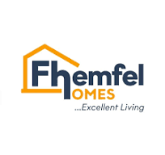

Strategic Case Study · Real Estate
A digital marketing strategy designed to generate qualified property enquiries, strengthen online visibility, and improve the journey from property discovery to enquiry.
Strategic case study · Not a client engagement

Fhemfel operates within the real-estate market, where potential buyers and investors often begin their journey online by searching for properties, locations, prices, and investment opportunities.
The marketing challenge is not simply generating traffic. It is attracting people with genuine property intent and creating a digital journey that moves them from discovery to enquiry.
The strategy focuses on connecting search demand, paid advertising, property content, landing pages, retargeting, and lead nurturing.
Reach people actively searching for properties, locations, homes, and investment opportunities.
Separate casual visitors from people showing meaningful buying or investment intent.
Make it easy for qualified prospects to request property details, schedule a viewing, or speak with an agent.
The objective is to move beyond visibility and traffic by building a measurable acquisition system around qualified real-estate prospects.
Attract potential buyers and investors through high-intent search and targeted paid campaigns.
Turn property interest into enquiries through focused landing pages, clear calls to action, and direct contact options.
Measure campaigns against meaningful actions such as qualified leads, viewing requests, and enquiries rather than impressions alone.
Real-estate audiences should not be treated as one large group. The strategy separates audiences according to their intent, needs, and position in the buying journey.
People actively searching for homes and residential properties based on location, budget, property type, and lifestyle.
Individuals looking for property opportunities with an interest in investment potential, location, appreciation, or rental income.
People who have already interacted with property pages, landing pages, adverts, or enquiry forms and can be re-engaged with relevant messaging.
Google Ads would be used to capture high-intent searches from people actively looking for properties, locations, and real-estate opportunities.
Target searches around property type, location, property listings, and real-estate opportunities.
Prioritize keywords that indicate stronger commercial intent rather than broad searches with little buying potential.
Send users to focused property or campaign pages with clear information, strong calls to action, and simple enquiry options.
Meta would complement search advertising by introducing properties to relevant audiences and keeping Fhemfel visible throughout the consideration stage.
Use property-focused creative to introduce listings and opportunities to relevant audiences across Facebook and Instagram.
Re-engage people who viewed properties, visited the website, interacted with content, or started but did not complete an enquiry.
Test website conversion campaigns alongside lead forms and direct enquiry options to identify the most efficient route to qualified prospects.
The campaign should not end when someone clicks an advert. Each stage of the journey should move the prospect closer to taking a meaningful action.
A prospect discovers a property through Google Search, Instagram, Facebook, or another digital touchpoint.
The prospect views the property, reviews the details, considers the location and value, and explores other relevant listings.
Clear calls to action encourage the prospect to request more information, schedule a viewing, or contact the real-estate team.
Prospects who do not convert immediately can be re-engaged through retargeting and appropriate follow-up communication.
Enquiries can be assessed based on property interest, budget, location, timeline, and level of intent.
The final objective is to turn qualified enquiries into property viewings, negotiations, and ultimately successful transactions.
Paid advertising can capture demand quickly, while SEO creates a long-term source of qualified property discovery.
Build pages around relevant property types, locations, and search terms that potential buyers and investors use when researching the market.
Strengthen visibility for location-based searches by creating useful, relevant content around properties and the areas they serve.
Publish useful property and market content that helps potential buyers make decisions while creating more opportunities for organic search visibility.
The strategy would be evaluated against business outcomes, with particular attention to the quality and cost of enquiries.
Track impressions, reach, clicks, CTR, CPC, traffic sources, and campaign-level performance.
Measure enquiry submissions, viewing requests, conversion rate, cost per lead, and landing-page performance.
Go beyond lead volume by measuring qualified leads, follow-up outcomes, viewing attendance, and ultimately closed transactions.